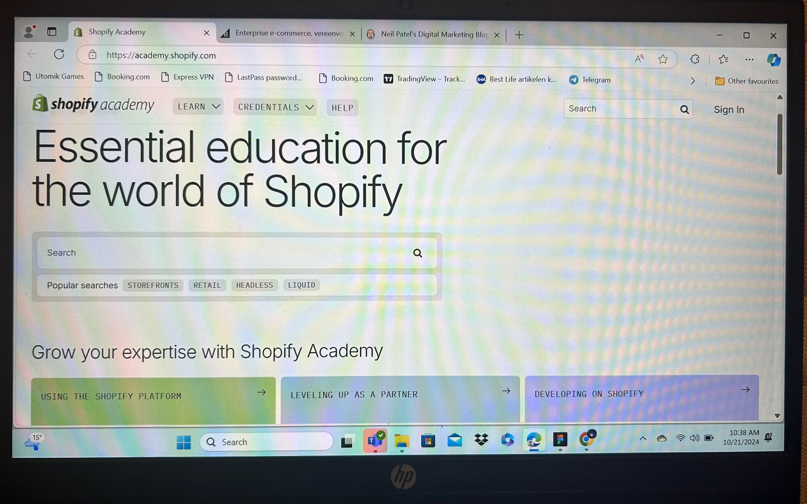
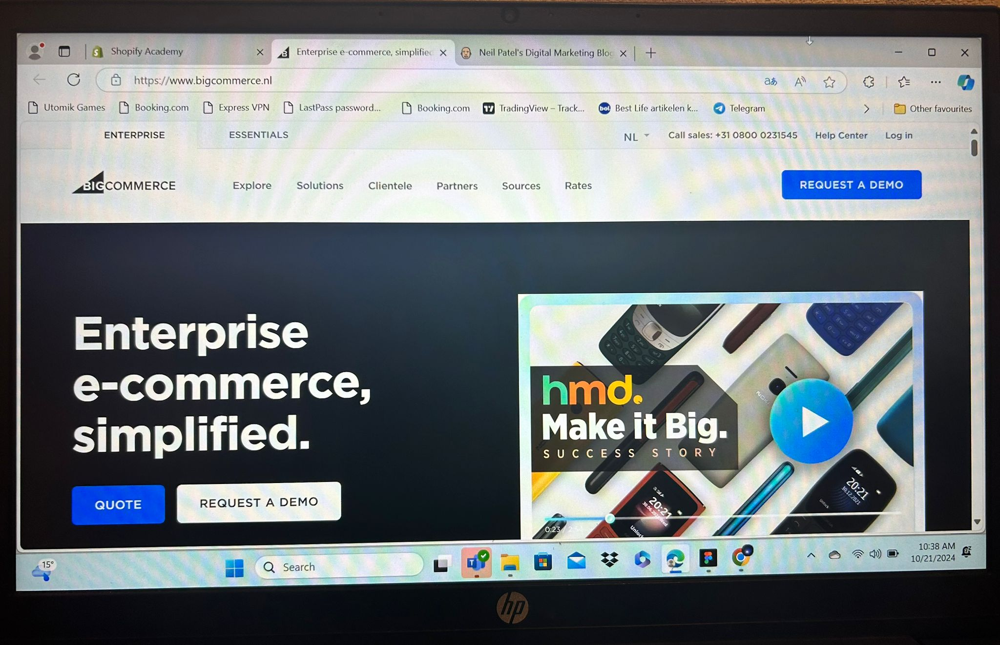
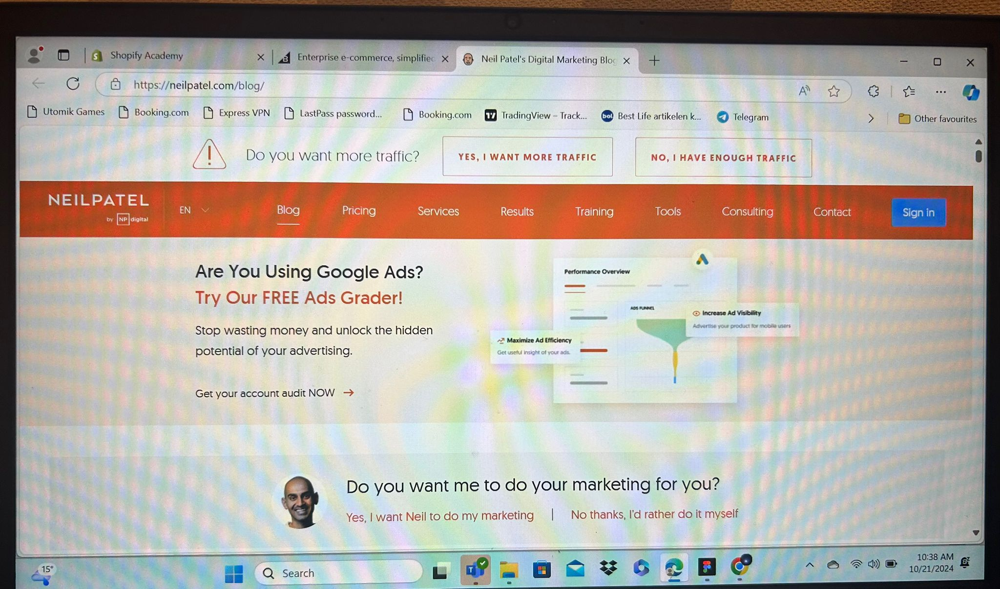

Shopify Compass
Why it’s important: Shopify is one of the leading E-commerce platforms, and their free training covers
everything you need to know to start an online store. It’s hands-on and practical, making it perfect for
beginners.
Key topics:
How to create and manage an online store
E-commerce marketing strategies
Product selection and customer experience tips

BigCommerce Blog
Platform:
BigCommerce Blog
Why it’s important: BigCommerce is a top E-commerce platform, and their blog provides in-depth insights
into the latest E-commerce trends and strategies. This is a great resource for keeping up with industry
changes and improving your knowledge as you grow your online business.
Key topics:
SEO for online stores
E-commerce marketing tactics
Trends in customer behaviour and online shopping

Neil Patels
Platform:
Neil Patel's Blog
Why it’s important: Neil Patel is a well-known digital marketing expert, and his blog offers actionable
advice on growing E-commerce businesses. His content is easy to understand and focuses on practical
strategies like increasing traffic, conversions, and using content marketing.
Key topics:
How to improve website traffic and sales
Effective email marketing strategies
Advanced SEO and content marketing for E-commerce
